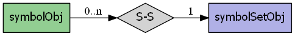

mapscript.symbolObj¶
- class mapscript.symbolObj(symbolname: char, imagefile: char const = None)¶
The SYMBOL object
Overview
The symbolObj has the following relationships:
Attributes
anchorpoint_xdouble See ANCHORPOINT
anchorpoint_ydouble See ANCHORPOINT
characterchar For TrueType symbols - see CHARACTER
filledfontchar For TrueType symbols - see FONT
imagepathchar immutable Path to pixmap file - see IMAGE
inmapfileint Boolean value for writing - if set to
TRUE, the symbol will be saved inside the Mapfile.maxxdouble
MS_SYMBOL_VECTORandMS_SYMBOL_ELLIPSEoptionmaxydouble
MS_SYMBOL_VECTORandMS_SYMBOL_ELLIPSEoptionminxdouble
MS_SYMBOL_VECTORandMS_SYMBOL_ELLIPSEoptionminydouble
MS_SYMBOL_VECTORandMS_SYMBOL_ELLIPSEoptionnamechar Symbol name - see NAME
numpointsint immutable Number of points of a vector symbol
refcountint immutable Reference counter
sizexdouble
MS_SYMBOL_VECTORandMS_SYMBOL_ELLIPSEoptionsizeydouble
MS_SYMBOL_VECTORandMS_SYMBOL_ELLIPSEoptionthisownThe membership flag
transparentint TODO Remove
transparentcolorint TODO Remove
typeint See TYPE
Methods
- __init__(symbolname: char, imagefile: char const = None)[source]¶
Create new default
symbolObjnamedsymbolname. Ifimagefileis specified, then the symbol will be of typeMS_SYMBOL_PIXMAP.
- getImage(input_format: outputFormatObj) imageObj[source]¶
Returns a pixmap symbol’s imagery as an
imageObj.
- setImage(image: imageObj) int[source]¶
Set a pixmap symbol’s imagery from image. Returns
MS_SUCCESSorMS_FAILURE
- setImagepath(imagefile: char const) int[source]¶
Sets the
imagefilepath for aMS_SYMBOL_PIXMAP. ReturnsMS_SUCCESSorMS_FAILURE